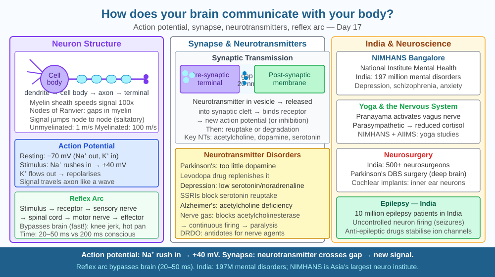

By the end of this lesson, you should be able to explain how nerve impulses travel, describe the synapse, and predict what happens if a nerve pathway is damaged.
You touch a hot stove. In 15–20 milliseconds — before you consciously register pain — your arm has already jerked away. The signal travels from your finger to your spinal cord and back at approximately 70 m/s. How does the body achieve this wireless-internet-speed communication using biological cells?
Neuron structure: Cell body (soma) + dendrites (receive signals) + axon (transmit signals) + myelin sheath (insulation, speeds transmission) + axon terminals (release neurotransmitters).
Action potential (nerve impulse): - Resting potential: −70 mV inside (more K⁺ inside, more Na⁺ outside — maintained by Na⁺/K⁺ pump) - Stimulus: Na⁺ channels open → Na⁺ rushes in → membrane depolarises to +40 mV - K⁺ channels open → K⁺ rushes out → repolarisation - Adjacent membrane depolarises → impulse travels down axon - Speed: unmyelinated 0.5–2 m/s; myelinated (saltatory conduction) 70–120 m/s
Synapse: Gap between neurons. Impulse arrives at axon terminal → vesicles release neurotransmitters (acetylcholine, dopamine, serotonin) into synaptic cleft → diffuse to post-synaptic receptor → triggers new action potential (or inhibits).
Reflex arc: Receptor → sensory neuron → spinal cord → motor neuron → effector. Bypasses brain for speed.
Central Nervous System (CNS): Brain + spinal cord. Peripheral NS: Somatic (voluntary) + Autonomic (involuntary — sympathetic/parasympathetic).
Think of nerve signal transmission as a relay race through a very long tunnel:
Losing the myelin sheath (as in multiple sclerosis) removes those shortcuts — signals slow to a crawl and coordination fails.
The SVG shows a single neuron occupying the full horizontal width of the illustration, with each compartment labelled and colour-coded.
The cell body (soma) is a large circle on the left, coloured light orange, with the nucleus visible inside; several branching dendrites extend leftward, labelled "receive signals."
The axon extends rightward as a long horizontal line; a cut-away cross-section shows the axon surrounded by a segmented myelin sheath (light blue), with small gaps labelled "nodes of Ranvier" where the bare membrane is exposed.
At the right end, the axon terminal expands into a bulb-shaped structure; a zoomed inset shows the synaptic cleft — the axon terminal contains small circles representing neurotransmitter vesicles, and the post-synaptic membrane on the right shows receptor proteins as Y-shaped structures.
Arrows along the axon point rightward and are labelled "+40 mV → −70 mV → +40 mV" to show the travelling action potential wave; a speed label reads "70–120 m/s (myelinated)."

Neurological disorders are the leading cause of disability in India: approximately 6 million epilepsy patients, 2 million Parkinson's patients, and 1 million multiple sclerosis patients. Antiepileptic drugs such as phenytoin and carbamazepine block Na⁺ channels, preventing the runaway action potentials that produce seizures — a direct pharmacological intervention at the ion-channel level.
Parkinson's disease results from the degeneration of dopamine-releasing neurons in the substantia nigra. Dopamine depletion breaks the signalling chain from brain to motor neurons, causing tremor and rigidity. The standard treatment — levodopa — crosses the blood-brain barrier and is converted to dopamine inside the brain. Deep brain stimulation (DBS), an electrical implant that mimics neurotransmitter signalling, was developed for Indian patients at AIIMS Delhi. India produces 30 % of global generic neurological drugs, making these treatments widely accessible.
Test the patellar (knee-jerk) reflex: sit with legs crossed so one foot hangs freely. Use the edge of your hand or a ruler to tap firmly just below the kneecap. Your lower leg kicks upward involuntarily.
This is a two-neuron reflex arc: a sensory neuron in the patellar tendon detects the stretch, sends a signal directly to the spinal cord (not the brain), and a motor neuron immediately signals the quadriceps to contract. The entire loop completes before the brain receives any information.
Try to suppress it using willpower — you generally cannot override it before the contraction completes. That inability is direct evidence that the reflex arc runs through the spinal cord independently. Notice also that both legs respond slightly — the spinal cord sends a weaker inhibitory signal to the opposite hamstring to prevent your whole body from toppling.
Memory formation involves long-term potentiation (LTP): repeated activation of a synapse physically strengthens the connection — the post-synaptic membrane inserts more AMPA receptors, and the pre-synaptic terminal releases more neurotransmitter per impulse. This means practising a skill literally builds stronger synaptic connections, which is why repetition works in learning.
Short-term memory is held in hippocampal circuits; consolidation to long-term memory (cortex) happens primarily during slow-wave sleep, when the hippocampus replays recent experiences and transfers patterns to the cortex. Sleep deprivation impairs LTP at the molecular level — literally preventing the protein synthesis needed to stabilise new synaptic connections. India's ₹6,000 crore sleep disorder industry is directly linked to this neuroscience.
Predict: A student studies a topic intensively for one night with only 3 hours of sleep. Another student studies the same material over three evenings with 7 hours of sleep each night. Using LTP and memory consolidation, predict which student will retain more information after one week, and explain the molecular reason why.
How does the brain send signals to muscles and organs throughout the body?
Correct answer: B
Why is understanding the mechanism of nerve signal transmission more useful than knowing the brain controls the body?
Correct answer: B
If a nerve pathway between the brain and a limb were damaged, what would you predict?
Correct answer: A
A patient is given a drug that permanently blocks all Na⁺ channels in the peripheral nervous system but does not affect the brain or spinal cord directly. Describe step by step what would happen to: (a) voluntary movement, (b) reflex responses, and (c) the patient's ability to feel pain. Then explain why local anaesthetics like lidocaine — which temporarily block Na⁺ channels in a small region — are safe during dental procedures but the drug described above would be lethal.
The speed of nerve conduction in an unmyelinated fibre is only about 1 m/s — slow enough that if you were a 10-metre-tall giant, it would take 10 seconds to feel a pinprick on your foot. Large dinosaurs may have faced exactly this problem: a Brachiosaurus with a 9-metre neck would have experienced a noticeable delay between feeling something touch its tail and its brain registering the sensation. Some palaeontologists argue this explains the large sacral neural ganglion found in some dinosaur fossils — a secondary nerve cluster near the hips that may have handled reflexes for the rear half of the body, letting the animal respond without waiting for the brain.
A nerve impulse is not electricity flowing through a wire — it is a wave of ion movements across a membrane, relayed chemically across each synapse, and myelination speeds this relay to over 100 m/s by letting the wave skip between gaps.